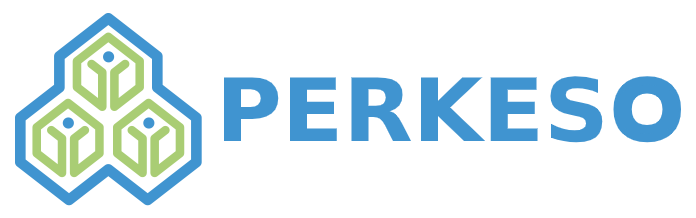

Pertubuhan Keselamatan Sosial
HOMEPAGE

The Social Security Organisation was established as one of the government departments under the Ministry of
Human Resources to administer, implement and enforce the Employees’ Social Security Act 1969 and the
Employees’
Social Security (General) Regulations 1971. On 1 July 1985, PERKESO’s status was changed to a Statutory Body
and
since 1 January 1992, PERKESO has implemented its own remuneration system known as the System Saraan Baru
PERKESO.
| Headquarters |
Menara PERKESO, Jalan Ampang, Kuala Lumpur |
Email |
perkeso@perkeso.gov.my |